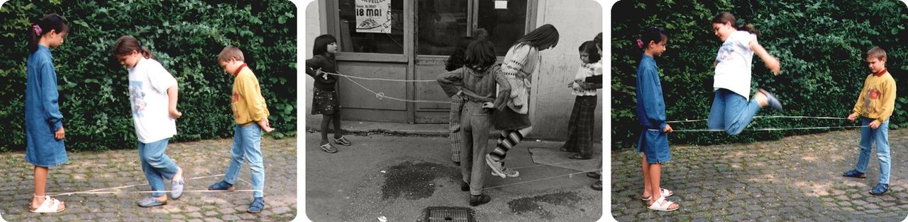

🌍 Top 10 Peleas de grillos y juegos infantiles chinos de antes
22 de noviembre de 2026
1. 🇨🇳 A los grillos de pelea chinos les hacen cosquillas con una pajita antes del combate
 En China, las peleas de grillos (斗蟋蟀) ponen a dos grillos machos frente a frente en un recipiente pequeño. Primero los pesan, porque las peleas se arreglan por peso. En Shanghái hay nueve categorías, de 0.51 a 0.74 gramos, así que un luchador pesa menos que un clip.
En China, las peleas de grillos (斗蟋蟀) ponen a dos grillos machos frente a frente en un recipiente pequeño. Primero los pesan, porque las peleas se arreglan por peso. En Shanghái hay nueve categorías, de 0.51 a 0.74 gramos, así que un luchador pesa menos que un clip.
Luego cada dueño le hace cosquillas en las antenas a su grillo con una pajita delgada hasta que se enoja. Se levanta una separación y los dos grillos se lanzan al ataque. Pierde el primero que se echa para atrás, sale corriendo, deja de cantar o salta fuera del ring.
Y aquí viene lo bueno: un grillo vencido que vuelve al ring solo pelea otra vez 1 de cada 10 veces. Pero si antes lo sacuden y lo lanzan al aire varias veces, vuelve a pelear 6 de cada 10 veces.
O sea, un "vuelito" es una charla motivacional para grillos.
2. 🇨🇳 Culparon al pasatiempo de grillos de un primer ministro de la caída de un imperio
Las peleas de grillos tienen más de 1,000 años, desde los emperadores de la dinastía Tang, y después la gente común también las adoptó. En el siglo XIII, Jia Sidao, primer ministro de la dinastía Song del Sur, escribió una guía para hacerlo.
Estaba tan obsesionado que se cree que su afición a los grillos ayudó a tumbar el imperio. Mucho después, durante la Revolución Cultural (1966–1976), el gobierno chino prohibió las peleas de grillos por ser un pasatiempo de ricos.
Aun así regresaron. En 2010, en China se gastaron más de 400 millones de yuanes (unos 63 millones de dólares) en grillos, y solo Shanghái tiene más de una docena de mercados de grillos.
Piensa en ello como un pasatiempo que sobrevivió al imperio que lo amaba.
3. 🇨🇳 Los grillos chinos pasaban el invierno en calabazas que crecían dentro de moldes
 En China, los grillos de mascota vivían en frascos de barro en verano y en calabazas de cáscara dura (unas frutas parecidas a calabacitas) en invierno. Las calabazas más elegantes no se tallaban. Se hacían crecer con esa forma.
En China, los grillos de mascota vivían en frascos de barro en verano y en calabazas de cáscara dura (unas frutas parecidas a calabacitas) en invierno. Las calabazas más elegantes no se tallaban. Se hacían crecer con esa forma.
Los jardineros reales metían una calabacita recién nacida dentro de un molde tallado, y al crecer, llenaba el molde y copiaba su dibujo. Por mucho tiempo, solo la Ciudad Prohibida, el palacio del emperador, podía hacerlas. Las tapas se cortaban para que el canto del grillo sonara mejor.
La calabaza moldeada más antigua que existe es de 1238 y se guarda en un templo en Japón. El emperador Yongzheng sostenía una calabaza en la mano incluso mientras dormía.
En otras palabras, la casa del grillo se cultivaba en un jardín, no se construía.
4. 🇨🇳 El jianzi es un gallito de bádminton que se juega con los pies
 En el jianzi (毽子), mantienes en el aire un gallito pesado con cualquier parte del cuerpo menos las manos, sobre todo con los pies. Suele ser cuatro plumas clavadas en una base de hule y pesa de 15 a 25 gramos, más o menos lo que cuatro hojas de papel de impresora.
En el jianzi (毽子), mantienes en el aire un gallito pesado con cualquier parte del cuerpo menos las manos, sobre todo con los pies. Suele ser cuatro plumas clavadas en una base de hule y pesa de 15 a 25 gramos, más o menos lo que cuatro hojas de papel de impresora.
En China se juega desde la dinastía Han, que empezó hace más de 2,200 años. Viene del cuju, un juego antiguo parecido al futbol que se usaba para entrenar soldados. Muchas veces se juega en un círculo de 5 a 10 personas que solo tratan de que no caiga.
En 1936, un atleta chino de Jiangsu lo mostró en los Juegos Olímpicos de Berlín, y en Alemania la gente empezó a jugarlo también. En Vietnam se llama đá cầu y es el deporte nacional.
Es como un hacky sack con plumas.
5. 🇨🇳 El diábolo chino zumba porque está hueco
 El diábolo chino (抖空竹, dǒu kōngzhú) es un carrete con dos ruedas que haces girar sobre un hilo atado entre dos palitos. Un libro de finales de la dinastía Ming, de entre 1572 y 1620, lo llamaba kōngzhōng, "campana de aire".
El diábolo chino (抖空竹, dǒu kōngzhú) es un carrete con dos ruedas que haces girar sobre un hilo atado entre dos palitos. Un libro de finales de la dinastía Ming, de entre 1572 y 1620, lo llamaba kōngzhōng, "campana de aire".
Ese nombre explica el truco. Las ruedas son huecas y tienen agujeros. Cuando el juguete gira rápido, el aire pasa a toda velocidad por los agujeros y hace un zumbido fuerte. Dicen que los expertos pueden hacerlo girar 2,000 vueltas por minuto, unas 33 vueltas cada segundo.
Un misionero lo describió desde Pekín en 1792, y se volvió furor en Europa. Se puso tan intenso que el jefe de policía de París llegó a prohibirlo en las calles.
Así que es un juguete que también es instrumento musical.
6. 🇨🇳 Los trompos de látigo en China tienen más de 3,000 años
 Los trompos son los juguetes más antiguos que se conocen, y se han encontrado en todos los continentes donde vive gente. En China, los arqueólogos han hallado trompos de alrededor de 1250 a. C., incluidos trompos de látigo, así que ahí la gente lleva unos 3,270 años haciéndolos girar.
Los trompos son los juguetes más antiguos que se conocen, y se han encontrado en todos los continentes donde vive gente. En China, los arqueólogos han hallado trompos de alrededor de 1250 a. C., incluidos trompos de látigo, así que ahí la gente lleva unos 3,270 años haciéndolos girar.
Un trompo de látigo funciona así: enrollas el cordón del látigo alrededor del trompo y luego jalas el mango de golpe. El cordón se desenrolla y lanza el trompo girando.
En partes de China, la gente de los pueblos yi, wa, yao y miao todavía juega con trompos, y desde 1995 el trompo forma parte de los juegos nacionales de las minorías étnicas de China.
Básicamente, este juguete arranca con un latigazo.
7. 🇨🇳 El resorte chino es una liga gigante que sigue subiendo

El resorte chino (跳皮筋, tiàopíjīn) usa un círculo de ligas o de cuerda elástica de al menos seis pies de largo, más o menos lo alto que es un adulto. Dos niños se paran dentro con el círculo alrededor de los tobillos, bien estirado.Un tercer niño salta entre los dos lados, haciendo pasos llamados "adentro", "afuera", "de lado" y "encima", muchas veces con una cantaleta. Si hace todos los pasos sin equivocarse, la liga sube: de los tobillos hasta la cintura y todavía más arriba.
El juego se ha regado por todo el mundo. Se llama "elastics" en Gran Bretaña y Australia, "French skipping" en algunos lugares y "Chinese garter" en Filipinas.
Piensa en ello como una barra de salto de altura que tienes que cruzar bailando.
8. 🏠 En China, el avioncito se llama "saltar las casas"
 En el avioncito, lanzas un objeto pequeño, como una piedra, a unos cuadros numerados pintados en el piso, y luego brincas por los cuadros y lo recoges. En China se llama tiào fángzi (跳房子), "saltar las casas".
En el avioncito, lanzas un objeto pequeño, como una piedra, a unos cuadros numerados pintados en el piso, y luego brincas por los cuadros y lo recoges. En China se llama tiào fángzi (跳房子), "saltar las casas".
Nadie sabe bien dónde empezó. No hay pruebas del juego antes del siglo XVI, y cada país le da su propio nombre. En Alemania es "Cielo e Infierno", y en Italia uno de sus nombres significa "campana".
La partida de avioncito más rápida en los Guinness World Records le tomó a Ashrita Furman 1 minuto y 2 segundos, más o menos la mitad de lo que tardas en lavarte los dientes.
Cada cuadro es una casita que solo puedes visitar en un pie.
9. ⭕ En China, los niños llevan unos 3,000 años rodando aros
 Rodar el aro es sencillo: empujas un aro grande por el suelo con un palo y corres detrás para que no se caiga. En China se cree que el juego viene del año 1000 a. C. o de antes.
Rodar el aro es sencillo: empujas un aro grande por el suelo con un palo y corres detrás para que no se caiga. En China se cree que el juego viene del año 1000 a. C. o de antes.
No siempre fue bienvenido. En el Londres de la década de 1840, los periódicos se quejaban de "La Plaga de los Aros": los aros de hierro de los niños no dejaban de pegarle a la gente en las espinillas. La policía les quitaba los aros a niños y niñas, pero las quejas solo aumentaron.
En la década de 1860, Charles Babbage culpó a los niños de meter los aros entre las patas de los caballos, haciendo caer a los jinetes. En 1864 se burlaron de él en el Parlamento británico por empezar "una cruzada" contra los aros.
En otras palabras, un aro y un palo bastaban para que los adultos entraran en pánico.
10. 🇨🇳 Los papalotes chinos se llaman así por el sonido que hacían
 Según cuentan en China, los filósofos Mozi y Lu Ban volaron papalotes de madera en el siglo V a. C. Cuando se inventó el papel en la dinastía Han, los papalotes de papel se hicieron populares. Para el año 549 d. C., se usó un papalote para llevar un mensaje en una misión de rescate.
Según cuentan en China, los filósofos Mozi y Lu Ban volaron papalotes de madera en el siglo V a. C. Cuando se inventó el papel en la dinastía Han, los papalotes de papel se hicieron populares. Para el año 549 d. C., se usó un papalote para llevar un mensaje en una misión de rescate.
Durante la dinastía Tang, la gente les amarraba flautas de bambú y silbatos a los papalotes para que hicieran ruido. De ahí viene la palabra moderna fēngzheng (风筝): se puso por el sonido que hacían los papalotes en el viento.
Hoy, Weifang, en Shandong, es conocida como la capital mundial del papalote. Tiene el museo de papalotes más grande del mundo y cada abril hace un festival de papalotes.
Así que un papalote chino es un silbato que vuela.
Dato curioso
Las peleas de grillos hasta llegaron a una famosa historia china de fantasmas. En "El grillo de pelea", de Pu Songling, el emperador está tan obsesionado con los grillos de pelea que un niño se convierte en uno para salvar a su papá. Se publicó en 1740 en Cuentos extraños de un estudio chino, un libro entero de historias sobrenaturales. Si te gustó esta, esos cuentos extraños antiguos son todo un mundo por explorar.
Créditos de las fotos (Wikimedia Commons)
- #1: Grillenkampf in China 1903.jpg by André Castaigne, Public domain
- #1: Shanghai Urban History Development Museum, Cricket Fighting (10178958006).jpg by Gary Todd from Xinzheng, China, CC0
- #1: A cricket match- tickling crickets with rats' whiskers to encourage them to fight. (1910).jpg by unknown, Public domain
- #2: Cricket fighting - container of crickets.jpg by Pauloleong2002, CC BY-SA 4.0
- #2: Chinese crickets.jpg by IvanWalsh.com from Shanghai, China, CC BY 2.0
- #2: Jia Sidao.1.jpg by Unknown authorUnknown author, Public domain
- #3: Cricket cages gourd and ivory 18th-19th centuries CE Qing Dynasty (1644-1911 CE) Beijing China.jpg by Mary Harrsch, CC BY-SA 4.0
- #3: MET 28 186 46.jpg by unknown, CC0
- #3: MET 28 186 7.jpg by unknown, CC0
- #4: Jianzi players.jpg by Janus Bahs Jacquet from Copenhagen, Danmark, CC BY-SA 2.0
- #4: Haikou People's Park - people playing jianzi - 01.jpg by Anna Frodesiak, CC0
- #4: Kick Shuttlecock (Jianzi) (flickr) by mikecogh, CC BY-SA 2.0
- #5: 学空竹的小学生.JPG by 三猎, CC BY-SA 4.0
- #5: 抖空竹的老人 #VSCO #latergram (flickr) by 小飞虹, CC BY-SA 2.0
- #5: 空竹零件.JPG by 三猎, CC BY-SA 4.0
- #6: Chinese top Dagny 1.JPG by Immanuel Giel, CC BY-SA 4.0
- #6: 赣州古城墙边公园玩陀螺的老人 打的人没在照片 (flickr) by Drnantu, CC BY-SA 2.0
- #6: Wooden spinning top and whip.jpg by Fumikas Sagisavas, CC0
- #7: Gummitwist-1998Kinder1.jpg by Werner 19:12, 1 October 2007 (UTC), CC BY-SA 3.0
- #7: PM NE 0303 30.jpg by PMRMaeyaert, CC BY-SA 4.0
- #7: Gummitwist-1998Kinder2.jpg by Werner 19:14, 1 October 2007 (UTC), CC BY-SA 3.0
- #8: 跳房子 Hopscotch - panoramio.jpg by lienyuan lee, CC BY 3.0
- #8: Chinese-American girl playing hopscotch 8d21950v.jpg by Marjory Collins, Public domain
- #8: SJACPS Hopscotch 191210 1.JPG by Honeybee, CC BY 3.0
- #9: 滚铁环的小孩 (flickr) by Drnantu, CC BY-SA 2.0
- #9: Boy with a hoop. (51915119994).jpg by Bernard Spragg. NZ from Christchurch, New Zealand, Public domain
- #9: Boys with hoops on Chesnut Street.jpg by Unknown authorUnknown author, Public domain
- #10: Kite of Chinese dragon.jpg by 虎眉, CC BY-SA 2.5 cn
- #10: Kite Flying Tiananmen Square (flickr) by moonlet.me, CC BY-SA 2.0
- #10: Weifang World Kite Museum.jpg by Ngguls, CC BY-SA 4.0

.jpg){kind=link}
.jpg){kind=link}


_Beijing_China.jpg){kind=link}


.jpg){kind=link}